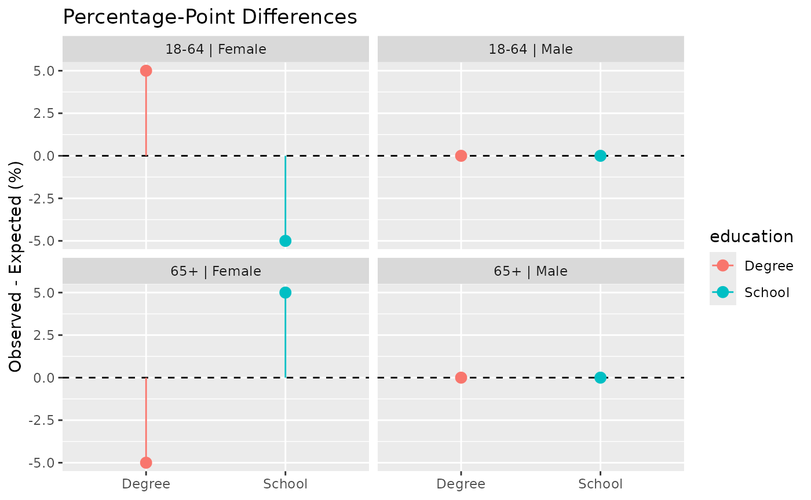
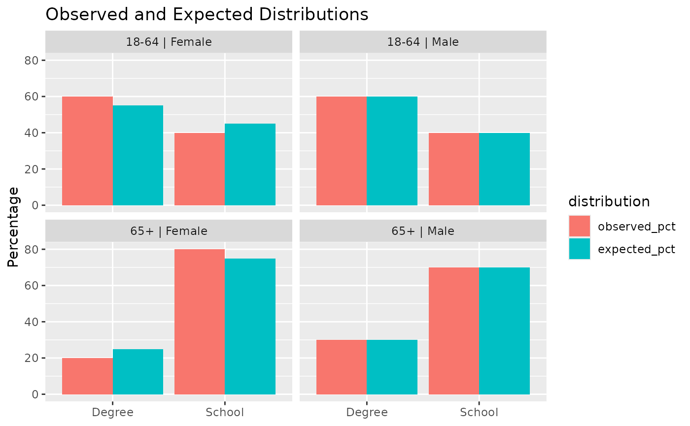

Note - the replica library is currently very experimental. It is still undergoing active development and testing. Function, class and method names, arguments and syntax may change without the use of deprecation conventions. This library should currently be used only for exploratory purposes.
Motivation
Generating a synthetic population is only part of the population-synthesis workflow.
It is equally important to assess whether the resulting population adequately reproduces the demographic distributions used during construction.
The replica package provides tools for:
comparing observed and expected distributions;
calculating goodness-of-fit statistics;
identifying poorly fitted demographic groups; and
visualising synthetic population quality.
This vignette demonstrates how to:
inspect validation results;
compare observed and expected distributions;
interpret validation statistics; and
visualise population quality.
Workflow overview
This vignette focuses on the final stage of the replica workflow.
Aggregate Counts
↓
↓
Synthetic Agents
↓
ReplicaAdder
↓
Enriched Population
↓
ReplicaStructure
+
ReplicaGrouper
↓
Synthetic Households
↓
Validation
Create population to be evaluated
To demonstrate the validation workflow we first create a simple synthetic population using functionality introduced in previous vignettes.
Example data generation process
We begin by creating a simple synthetic population.
Generate agents
age_gender <- data.frame(
age_group = c(
"18-64",
"18-64",
"65+",
"65+"
),
gender = c(
"Male",
"Female",
"Male",
"Female"
),
count = c(
10,
10,
10,
10
)
)
population <- make_agents(
age_gender
)Supply reference contingency table
education_contingency <- data.frame(
age_group = c(
"18-64", "18-64",
"18-64", "18-64",
"65+", "65+",
"65+", "65+"
),
gender = c(
"Male", "Male",
"Female", "Female",
"Male", "Male",
"Female", "Female"
),
education = c(
"Degree", "School",
"Degree", "School",
"Degree", "School",
"Degree", "School"
),
count = c(
60, 40,
55, 45,
30, 70,
25, 75
)
)Enrich population with additional attribute
adder <- ReplicaAdder(
synth_pop = population,
contingency = education_contingency,
target_attribute = "education",
group_by = c(
"age_group",
"gender"
)
)
adder <- enhance(adder)Inspect validation results
Validation is automatically performed during attribute assignment.
Validation results are stored in
adder@validation_results that includes the following
elements:
names(adder@validation_results)## [1] "name" "z_square" "p_value"
## [4] "degrees_of_freedom" "critical_value" "warning_required"
## [7] "details"A subset of the summary statistics can be inspected directly.
adder@validation_results[c("z_square","p_value",
"warning_required")]## $z_square
## [1] 2.155412
##
## $p_value
## [1] 0.9758728
##
## $warning_required
## [1] FALSEThese values provide a high-level assessment of the match between the observed synthetic population and the target contingency table.
Interpreting summary statistics
The z-squared statistic summarises overall divergence between the observed and expected distributions. Smaller values generally indicate closer agreement.
The p-value provides a statistical assessment of fit. As a general rule:
larger p-values indicate closer agreement;
smaller p-values indicate poorer fit.
The warning_required flag is automatically set when the p-value falls below the selected threshold (default, 0.05).
P-values should not be interpreted in isolation. Large synthetic populations can produce statistically significant results even when percentage-point differences are very small.
For this reason it is generally advisable to review goodness-of-fit statistics in conjunctions with other assessments including observed versus expected distributions and percentage-point differences.
Interpreting the validation detail table
Detailed validation results are available via
head(adder@validation_results$details).
In many practical applications, percentage-point differences provide the most useful indication of whether a synthetic population is sufficiently accurate for its intended purpose. Therefore, the most useful columns may be:
adder@validation_results$details[
,
.(
age_group,
gender,
education,
observed_pct,
expected_pct,
difference_pct
)
]## Key: <age_group, gender, education>
## age_group gender education observed_pct expected_pct difference_pct
## <char> <char> <char> <num> <num> <num>
## 1: 18-64 Female Degree 60 55 5
## 2: 18-64 Female School 40 45 -5
## 3: 18-64 Male Degree 60 60 0
## 4: 18-64 Male School 40 40 0
## 5: 65+ Female Degree 20 25 -5
## 6: 65+ Female School 80 75 5
## 7: 65+ Male Degree 30 30 0
## 8: 65+ Male School 70 70 0In this table:
observed_pct is the observed synthetic percentage;
expected_pct is the expected percentage;
difference_pct is the percentage-point difference.
Values close to zero indicate that the synthetic population is reproducing the target distribution successfully.
Positive values indicate over-representation.
Negative values indicate under-representation.
Visual comparisons
The simplest way to assess synthetic population quality is to compare observed and expected percentages directly.
plot_validation_distributions(adder@validation_results) This figure compares observed and expected percentages within each
conditioning group.
This figure compares observed and expected percentages within each
conditioning group.
When fit is good, the observed and expected values should be similar.
Percentage-point differences are often the most useful diagnostic for identifying population mismatches.
plot_validation_differences(adder@validation_results)
This plot highlights demographic groups that differ most from the target distribution.Groups with the largest positive or negative values contribute most to mismatch between observed and expected distributions.
For larger validation exercises, a heatmap provides a compact summary of fit quality.
plot_validation_heatmap(adder@validation_results)
Heatmaps become increasingly useful as the number of conditioning variables grows.
Values close to zero indicate a close match between observed and expected distributions.
Larger positive or negative values identify groups that may require further investigation.
Potential validation elements
All of the following steps can be used to validate a synthetic population:
compare observed and expected distributions;
examine percentage-point differences;
identify poorly fitted demographic groups;
review goodness-of-fit statistics; and
assess whether any observed discrepancies are practically important.
Key takeaways
In this vignette we:
inspected automatically generated validation results;
compared observed and expected distributions;
visualised validation performance;
interpreted percentage-point differences;
interpreted goodness-of-fit statistics; and
developed a practical framework for evaluating synthetic population quality.
Together these tools provide a robust approach to assessing the
quality of synthetic populations generated using
replica.